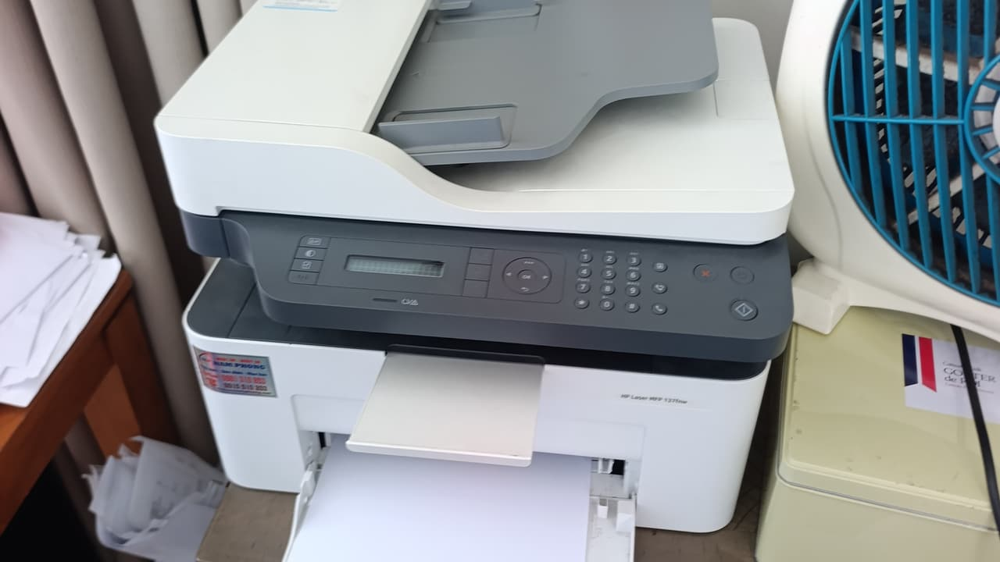

Nạp mực, bơm mực máy in Quận 4 tại nhà — hẻm nhỏ vẫn tới được
Cửa hàng đặt tại 5/19 Phạm Hùng. Kỹ thuật tới Quận 4 trong 25 – 40 phút — xem máy rồi báo giá, anh/chị đồng ý thì mới tháo.

Quận 4 nhỏ và sát trung tâm, nhưng đặc trưng là nhà phố chật và hẻm nhiều. Rất nhiều khách ở đây hỏi cùng một câu trước khi hỏi giá: "có làm tại nhà không hay phải mang máy đi?". Câu trả lời là làm tại nhà, tại chỗ — nạp mực và vệ sinh buồng mực chỉ cần tháo hộp mực ra, không cần tháo máy, không cần mang đi đâu.
Chúng tôi đi xe máy kèm thùng vật tư nên hẻm nhỏ không phải trở ngại. Kỹ thuật cũng mang theo tấm lót để trải trước khi mở hộp mực — bụi mực rất mịn, trong nhà phố chật thì việc này đáng kể.
Thông tin nhanh — Quận 4
| Thời gian tới | 25 – 40 phút |
| Nạp mực laser A4 | từ 80.000đ |
| Máy A3 / photocopy | từ 250.000đ |
| Phun mực hệ bình | từ 150.000đ |
| Giờ làm việc | 08:00 – 19:00 |
| Hoá đơn VAT | Có |
Đổ mực, nạp mực, thay mực — và khi nào nên mua hộp mới
Khách Quận 4 gọi bằng cả "nạp mực máy in quận 4", "đổ mực máy in quận 4", "bơm mực máy in quận 4", "thay mực máy in quận 4". Cùng một việc, cùng giá.
Nhiều khách tìm thêm "nạp mực máy in giá rẻ quận 4". Nói thẳng về chuyện giá rẻ: mực có nhiều cấp, và mực rẻ nhất tiết kiệm được vài chục nghìn nhưng bột thô hơn, làm trống xước nhanh. Tiết kiệm 30.000đ hôm nay để ba tháng sau thay trống 250.000đ thì không phải tiết kiệm.
Chúng tôi dùng một loại mực nhập khẩu cho máy A4 và không bán thêm hạng rẻ hơn — để không phải giải thích vòng vo khi bản in kém. Cách tiết kiệm thật là nạp đúng lúc và đừng để máy in cạn hẳn mới gọi.
Khu vực Quận 4 nhận tận nơi
Khánh Hội, Vĩnh Hội, Xóm Chiếu
Bến Vân Đồn, Hoàng Diệu, Đoàn Văn Bơ
Tuyến Nguyễn Tất Thành – Tôn Đản
Khu Nguyễn Thần Hiến – Lê Quốc Hưng
Chung cư và cao ốc dọc Bến Vân Đồn
Cửa hàng, phòng khám, văn phòng nhỏ toàn quận
Nhà phố Quận 4: hai lỗi hay gặp nhất
Máy để lâu không in, giờ in ra giấy trắng hoặc rất mờ
Rất phổ biến với hộ gia đình và văn phòng nhỏ. Mực trong hộp đóng bánh, trục từ chai không ăn mực. Thường chỉ cần vệ sinh và nạp lại là chạy tốt — không phải thay máy, cũng không phải thay hộp mực mới.
Máy in phun Epson L-series bị sọc ngang, thiếu màu
Nhà phố hay dùng Epson L3110, L3210 để in cả tài liệu và ảnh. Để vài tuần không in là đầu phun nghẹt. Việc cần làm là thông đầu phun rồi in kiểm tra, không phải bơm thêm mực — bình vẫn còn đầy mực.
Chung cư có quy định ra vào
Các cao ốc dọc Bến Vân Đồn thường yêu cầu đăng ký khách ở lễ tân. Anh/chị nhắn tên toà và số căn, chúng tôi liên hệ trước để kỹ thuật lên đúng lần đầu.
Tới trong bao lâu, tính theo từng khu của Quận 4
Số dưới đây là thời gian thật từ lúc anh/chị gác máy tới lúc kỹ thuật có mặt, đo trong giờ hành chính ngày thường.
| Khu | Thời gian tới | Ghi chú |
|---|---|---|
| Khánh Hội, Bến Vân Đồn | 20 – 30 phút | Qua cầu Kênh Tẻ hoặc cầu Ông Lãnh. |
| Vĩnh Hội, Xóm Chiếu | 25 – 35 phút | Nhiều hẻm nhỏ, cho thêm số hẻm. |
| Đoàn Văn Bơ, Hoàng Diệu | 25 – 35 phút | Đường một chiều vài đoạn. |
| Tôn Đản, Nguyễn Thần Hiến, Lê Quốc Hưng | 25 – 40 phút | Hẻm trùng số nhiều, nhắn thêm một mốc. |
| Nguyễn Tất Thành | 30 – 40 phút | Xe container đông, kẹt vào giờ cao điểm. |
| Chung cư và cao ốc dọc Bến Vân Đồn | 30 – 45 phút | Đã gồm thời gian đăng ký khách ở lễ tân. |
Giờ cao điểm sáng 7–8h và chiều 17–18h cộng thêm khoảng 10 phút. Ca đặt trước thì đúng khung giờ hẹn.
Hai kiểu máy ở nhà phố Quận 4 và lỗi thường gặp
Những lỗi dưới đây kỹ thuật mang sẵn vật tư nên xử lý xong ngay trong một lượt, không phải hẹn lại.
| Bản in bị gì | Thường là do | Xử lý tại chỗ |
|---|---|---|
| In ra giấy trắng hoặc rất mờ sau thời gian không dùng | Mực đóng bánh, trục từ chai vì máy vài tuần mới in một lần. | Vệ sinh buồng mực và nạp lại 80.000 – 100.000đ, hiếm khi phải thay gì. |
| Máy phun Epson in bị sọc ngang, thiếu màu | Đầu phun nghẹt do để lâu không in — L3110, L3210 rất hay gặp. | Thông đầu phun 100.000 – 250.000đ tuỳ mức nghẹt, báo trước khi làm. |
| Epson báo mực thải đầy, không cho in | Bộ đếm mực thải đã đạt ngưỡng, máy tự khoá dù vẫn in tốt. | Reset bộ đếm 100.000 – 150.000đ, làm tại chỗ trong ít phút. |
| Mực lem, sờ vào nhoè tay | Gạt mực mòn sau nhiều lần nạp. | Thay gạt mực 100.000 – 150.000đ kèm hút sạch mực thải. |
| Kẹt giấy dù giấy mới mua | Nhà phố ẩm, giấy hút ẩm nên mép cong và vào lệch. | Vệ sinh đường giấy; nên để giấy trong bao kín thay vì để hở. |
| Sọc đen dọc trang, lặp theo chu kỳ | Trống xước. Đo khoảng cách giữa hai vệt là biết lỗi ở trống hay trục từ. | Thay trống 180.000 – 280.000đ. |
Nói giúp mấy thứ này lúc gọi, đỡ mất một lượt đi lại
Số hẻm và một mốc dễ nhận ra
Quận 4 hẻm nhiều và trùng số, nhất là quanh Tôn Đản và Xóm Chiếu. Cho thêm tiệm tạp hoá hay quán cà phê gần nhà là kỹ thuật tới thẳng.
Máy laser hay máy phun
Hai loại xử lý khác hẳn nhau và vật tư cũng khác. Chụp cái máy gửi Zalo là đủ, không cần biết tên dòng.
Chung cư thì báo tên toà và số căn
Các cao ốc dọc Bến Vân Đồn yêu cầu đăng ký khách ở lễ tân. Báo trước để chúng tôi liên hệ, kỹ thuật lên đúng lần đầu.
Chỗ đặt máy trong nhà
Kỹ thuật mang tấm lót trải trước khi mở hộp mực. Nhà chật hoặc sàn gỗ thì nói trước để chuẩn bị kỹ hơn, bụi mực rất mịn.
Bảng giá đầy đủ theo mã hộp mực
Giá như nhau cho cả bảy khu — chỉ thời gian tới là khác.
Máy hỏng chứ không chỉ hết mực?
Xem bảng triệu chứng – nguyên nhân để biết việc nào xử lý được ngay tại chỗ.
Câu hỏi thường gặp — khách Quận 4
Nạp mực máy in Quận 4 có làm tại nhà không?
Có, làm tại nhà và tại chỗ. Kỹ thuật chỉ tháo hộp mực, không tháo máy, không mang máy đi. Toàn bộ mất khoảng 15–20 phút cho máy laser A4, có in thử trước khi rời đi.
Nhà trong hẻm nhỏ, kỹ thuật vào được không?
Được. Chúng tôi đi xe máy kèm thùng vật tư. Anh/chị chỉ cần cho số hẻm và một điểm dễ nhận ra gần đó.
Nạp mực giá rẻ có làm hỏng máy không?
Phụ thuộc loại mực. Mực bột thô làm trống xước nhanh, vài tháng sau bản in có sọc và phải thay trống — đắt hơn số tiền đã tiết kiệm. Chúng tôi dùng một loại mực nhập khẩu cho máy A4 và nói rõ giá từ đầu, không chào thêm hạng rẻ hơn.
Máy Epson L3110 nhà tôi in bị sọc, có phải hết mực?
Thường không. Nếu bình mực còn thì đó là nghẹt đầu phun do để lâu không in. Cần thông đầu phun chứ không phải bơm thêm mực. Kỹ thuật kiểm tra rồi báo giá trước khi làm.
Nạp mực máy in Quận 4 giá bao nhiêu?
Laser A4 phổ thông 80.000 – 100.000đ đã gồm công đi lại và vệ sinh buồng mực. Brother, Samsung 120.000đ. Bơm mực nước Epson L-series 150.000 – 200.000đ. Khung giá nói ngay trong cuộc gọi.
Nhà chỉ có một máy in nhỏ, có nhận không?
Có. Chúng tôi nhận cả máy lẻ của hộ gia đình, không đặt mức tối thiểu. Phần lớn khách Quận 4 đúng là nhà phố một máy.
Bao lâu thì nên nạp một lần?
Không có mốc tháng cố định — tính theo số trang in thực tế. Máy in ít lại hay hỏng hơn máy in đều, vì mực đọng lâu trong hộp sẽ đóng bánh. Chi tiết có trong bài kinh nghiệm trên web.
Khu vực lân cận
Đặt nạp mực tận nơi Quận 4
Kỹ thuật tới trong 25 – 40 phút. Xem máy rồi báo giá, anh/chị đồng ý mới tháo.